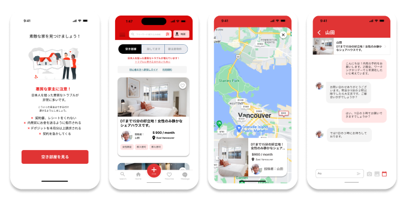
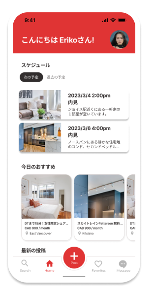

Duration:
2 month
Member:
Just me :)
Role:
UI/UX design
Ovewview
JPCANADA is a classifieds website for Japanese residents in Canada, operated by a study abroad agency. It's a platform for finding housing, job opportunities, and engaging in buying and selling within the Japanese community. Among study abroad students in Canada, JPCANADA is highly recognized and invaluable for obtaining information. To better serve Japanese residents in Canada, I aim to design a user-friendly app with enhanced features, as the current UI is outdated and lacks convenience. The goal is to create an efficient and enjoyable experience for users.
Background
Vancouver is highly popular among Japanese people for studying English and working holidays. Approximately 31,039 Japanese residents call Vancouver home, and Japanese can be heard in various areas downtown. Living in a one-room studio apartment (1K) in Vancouver costs around 3,000 dollars per month (approximately 300,000 yen). For international students not working full-time, this amount is unrealistic and financially challenging.
Without permanent residency or a long-term work visa, it's challenging for international students to sign contracts with real estate agents or apartments. As a result, it is very difficult for international students to live alone in apartments, and the standard approach is to search for individual landlords online and enter into agreements with them.
Before
There are 14 to 28 posts per day, and the number increases on weekends. Out of the last 100 posts, 36 were from people looking for rooms, not offering vacant rooms. The posts have various color schemes and content, as they follow a free-format style, resulting in a diverse range of information presented in each article.
After
 Unified color and tone Highlighted warning messages to prevent troubles Enhanced navigation for better user experience Modified the room listing to display photos Added messaging, schedule, saving, and search features
Research
I was able to conduct an online survey using Google Forms, targeting Japanese individuals aged 20 to 32 residing in Vancouver. I received responses from 20 participants.
Over 90% of the people are using JPCANADA for housing .
No one has used the feature to buy or sell items.
Over 80% of users find JPCANADA's website difficult to use, but continue to use it.
Over 80% experienced difficulties while house hunting.
About half of the users encountered issues or problems during the process.
How might we
create a platform that makes it easy for international students to find rooms that truly meet their desired conditions?
User person
Userflow
created the flowchart of how users reach their ultimate goal of finding a room,
to identify the main tasks involved, determine the necessary screens, and outline the actions they take.
Low Fidelity Prototype
I created digital wireframes based on the rough sketches and check the flow making a Low Fidelity prototype to ensure there are no issues with the user journey.
Style Guide
Taking inspiration from the flags of Japan and Canada, I created a color palette with white and red as the main tones.
FINAL DESIGN
1. Onboarding
I have made user registration mandatory.
While JPCANADA is an anonymous bulletin board, house hunting involves significant expenses and effort. Therefore, it is reassuring for both landlords and tenants to have some visibility of information rather than complete anonymity. Additionally, the company can manage malicious posters more effectively.
Before accessing the room search page, we have added a warning page to raise awareness among those who are searching for their first home in Vancouver about things they should be cautious about.
2. My page

By making user registration mandatory,
I have enabled users to manage their viewing schedule from their profile page.
Additionally, we have implemented a feature that displays recommended rooms based on users' past search history, making it easier for them to find rooms they may like.
Users can now also view the rooms they have previously seen from their profile page's history.
3. Search page
4. Room details page
5. Message
Takeaways & Next step!
I had experienced many usability issues while using the app myself, but during the research process, I discovered countless areas for improvement and received interesting insights from various perspectives. Although I had a rough design in mind before starting the research, incorporating user feedback was essential, leading to a final product that was completely different from my initial concept. Not all gathered improvement points could be implemented (e.g., creating contract templates or message templates for initial inquiries), so there is still room for further enhancements.
While this research focused on international students looking for rental properties, I recognize that conducting research from the perspective of property owners seeking tenants would provide valuable insights if time and resources permit. Although we conducted user testing once for the final design, I would love to conduct additional rounds of user testing to further refine the app and make it even more user-friendly. Continuous improvement based on user feedback is crucial in creating a successful and user-centric platform.
Thank you!